#include <makeHistograms.h>
Collaboration diagram for makeHistograms:
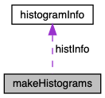
Public Member Functions | |
| makeHistograms () | |
| ~makeHistograms () | |
| std::vector< histogram > | GetHists (std::vector< unsigned int > histNums) |
| void | SetRootFile (std::string fileName) |
| void | PrintHistograms () |
| void | PrintNevents () |
| void | createCutTableFile (std::string fileName) |
| void | drawHistograms (histogramInfo histInfo) |
| void | makeEfficiencyCurve (std::vector< unsigned int > signalHists, std::vector< histDetails > histinfo, std::string fileName) |
| void | makePurityCurve (std::vector< unsigned int > signalHists, std::vector< unsigned int > backgroundHist, std::vector< histDetails > histinfo, std::string fileName) |
| void | SetHistInfo (std::vector< histogram > hists, std::vector< histDetails > lColorAndLeg, std::string title, std::string axis, std::string saveAs) |
Private Attributes | |
| TFile * | f1 = nullptr |
| This pointer to handles input ROOT file. More... | |
| unsigned int | histNum = 0 |
| histNum is used to store histogram Number. More... | |
| TKey * | key = nullptr |
| This key pointer is used to extract historgram information. More... | |
| TKey * | subkey = nullptr |
| This subkey pointer is used to extract historgram information. More... | |
| TDirectory * | dir = nullptr |
| This dir pointer is used to access folders in ROOT file and extract historgram information. More... | |
| TDirectory * | newDir = nullptr |
| Currently not in use. More... | |
| histogramInfo | histInfo |
| std::vector< histogram > | hist |
| std::vector< histogram > | selectedHists |
| std::vector< cutTable > | eventTable |
Constructor & Destructor Documentation
◆ makeHistograms()
| makeHistograms::makeHistograms | ( | ) |
◆ ~makeHistograms()
| makeHistograms::~makeHistograms | ( | ) |
Member Function Documentation
◆ createCutTableFile()
| void makeHistograms::createCutTableFile | ( | std::string | fileName = "defaultCutTable.txt" | ) |
Here is the caller graph for this function:
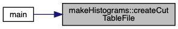
◆ drawHistograms()
| void makeHistograms::drawHistograms | ( | histogramInfo | histInfo | ) |
Here is the caller graph for this function:

◆ GetHists()
| std::vector< histogram > makeHistograms::GetHists | ( | std::vector< unsigned int > | histNums | ) |
Here is the caller graph for this function:
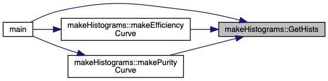
◆ makeEfficiencyCurve()
| void makeHistograms::makeEfficiencyCurve | ( | std::vector< unsigned int > | signalHists, |
| std::vector< histDetails > | histinfo, | ||
| std::string | fileName | ||
| ) |
Here is the call graph for this function:
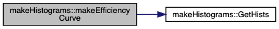
Here is the caller graph for this function:
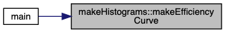
◆ makePurityCurve()
| void makeHistograms::makePurityCurve | ( | std::vector< unsigned int > | signalHists, |
| std::vector< unsigned int > | backgroundHist, | ||
| std::vector< histDetails > | histinfo, | ||
| std::string | fileName | ||
| ) |
Here is the call graph for this function:
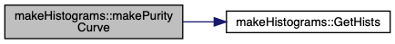
Here is the caller graph for this function:
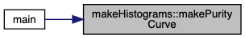
◆ PrintHistograms()
| void makeHistograms::PrintHistograms | ( | ) |
Here is the caller graph for this function:
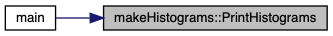
◆ PrintNevents()
| void makeHistograms::PrintNevents | ( | ) |
Here is the caller graph for this function:
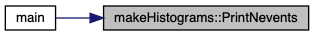
◆ SetHistInfo()
| void makeHistograms::SetHistInfo | ( | std::vector< histogram > | hists, |
| std::vector< histDetails > | lColorAndLeg, | ||
| std::string | title, | ||
| std::string | axis, | ||
| std::string | saveAs | ||
| ) |
Here is the call graph for this function:
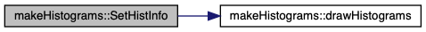
Here is the caller graph for this function:
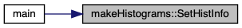
◆ SetRootFile()
| void makeHistograms::SetRootFile | ( | std::string | fileName = "../rootFiles/Cleaned_20191028_backup.root" | ) |
Here is the caller graph for this function:
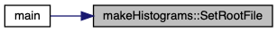
Member Data Documentation
◆ dir
|
private |
This dir pointer is used to access folders in ROOT file and extract historgram information.
◆ eventTable
|
private |
◆ f1
|
private |
This pointer to handles input ROOT file.
◆ hist
|
private |
◆ histInfo
|
private |
◆ histNum
|
private |
histNum is used to store histogram Number.
◆ key
|
private |
This key pointer is used to extract historgram information.
◆ newDir
|
private |
Currently not in use.
◆ selectedHists
|
private |
◆ subkey
|
private |
This subkey pointer is used to extract historgram information.
The documentation for this class was generated from the following files: